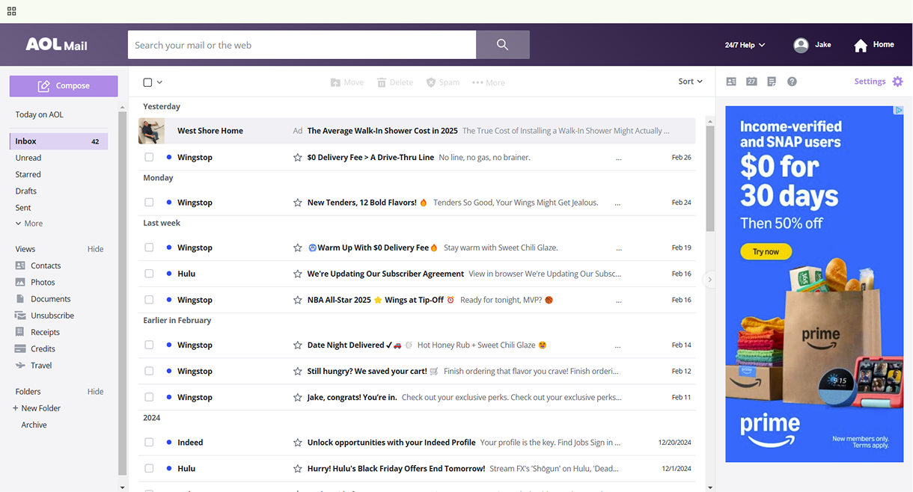
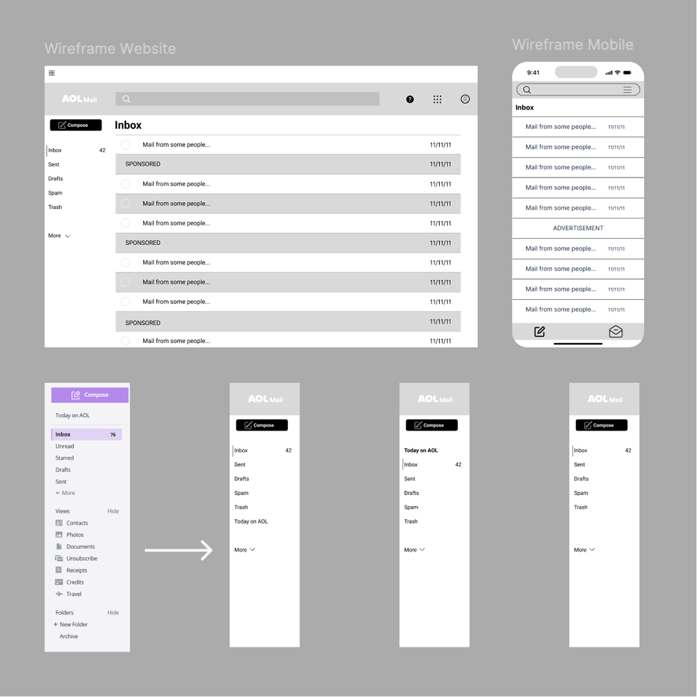
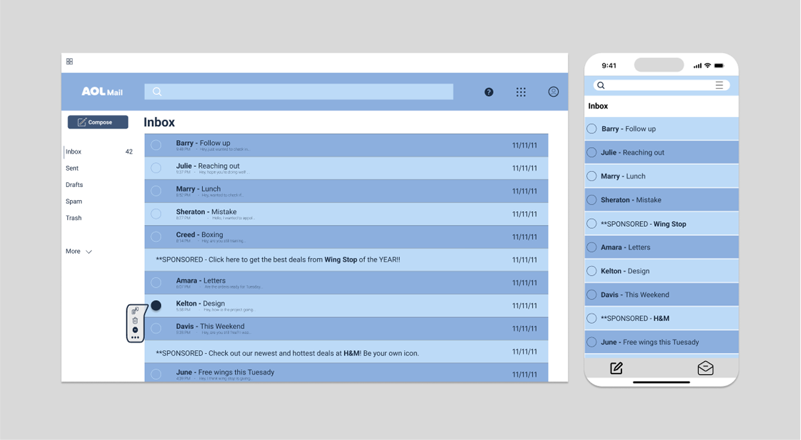

AOL Mail
Decluttering AOL Mail for Faster Orientation
This project is a light UX/UI case study examining the usability and visual hierarchy of AOL Mail's inbox experience. The goal was to identify areas where interface complexity and layout decisions create friction, particularly for AOL's predominantly older user base, and explore design adjustments that improve clarity, reduce cognitive load, and better align the interface with user intent. This was an independent, observational redesign conducted as part of an academic project and is not affiliated with AOL.
Original - AOL's Current Experience

The original AOL Mail page was over-cluttered in many ways from distracting advertisements to an overwhelming navigation. I wanted to improve three main aspects of this overall experience: the ad placement, the side navigation, and the top selection menu.
The Drawing Board
These are a few simple sketches I drew up in the ideation process, addressing the main problems addressed earlier.
My Wireframe Edits

For this school project, I used Figma to redesign key areas of the AOL Mail interface with a focus on reducing visual noise, improving hierarchy, and simplifying everyday inbox interactions.
- Ad Placement & Visual Hierarchy: Integrated ads directly into the email list instead of dedicating a large, constantly changing ad area, reducing visual noise and keeping focus on core inbox tasks.
- Simplified Side Navigation: Reduced cognitive load by prioritizing essential actions and grouping secondary options under a “More” dropdown, improving clarity and scannability.
- Contextual Actions on Demand: Replaced permanently disabled actions such as Delete and Move with a contextual pop-up menu that appears only when emails are selected, aligning controls with user intent and minimizing confusion for less tech-savvy users.
Final Details

After adding in the color, a demo of what the pop-up menu would look like, and also a mobile rendition, I was able to see the improvements that my edits made to the overall interface. These changes prioritize clarity, reduce cognitive load, and better support the needs of AOL Mail's predominantly older user base without altering core functionality.